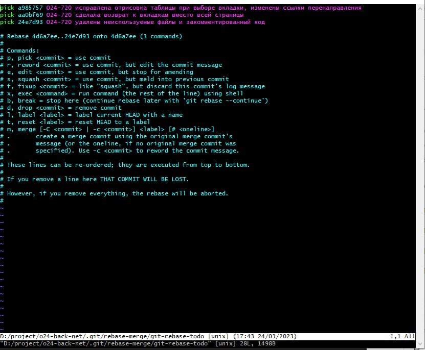

Rewriting Your Git Commit History
Making history in a big commercial project where the commiting must be on a top notch accuracy and cleanliness without confusions in the history of a work flow. Being a newbie I had no idea the first time I’d pushed the very first changes in a very first task that I supposed to check the git status before commiting and even staging. So when I’d sent a pull request to the assignee who happened to encounter the non related file to the task in my first commit. The assignee asked me to take it out of there as it is ruining the view of the history but himself didn’t know how to do it as well as me. That was upon me to figure out. One whole day browsing and messing with the history even more was worth the clear lesson at the end. So if you happened to stumble upon this kind of non pleasant accident here the post comes useful for you.
I had 3 commits away 1 bad commit with the nonrelated.file (needs to be removed).
The easiest to rewrite your story in this case. Before you start make sure you don’t have any changes. your work tree must be clean with no changes.
- Use
git show [commit id] -- [Path to the nonrelated.file] | git apply -R. File will fall to the previous state but will go to the changes as a new change.
git show 1ccbe9c8f66 -- Demo/Modules/nonrelated.file | git apply -R
-
git stashto store change for later -
git rebase -i HEAD~nn - number of commits you need to come back. In my case it was 3 commits backgit rebase -i HEAD~3 -
Now you are redirected to the console editor where you will need to press Insert key and delete the
pickthen typeeditin front of the needed commit. After that dial press Insert key, after Esc key then type:wqto save the file. And git will drop back to the bash/shell for you to fix that commitGit console editor looks as below: 
-
Pop the stash by using
git stash pop. It will put that ’new’ change of the nonrelated.file back to the changes -
Add the change by
git add Demo/Modules/nonrelated.file -
git commit -m "the same message as in the fixed commit" --amendto add the change in a commit -
if you will find yourself in rebase mode still you may terminate by
git rebase --abort -
git push -f origin O24-720for rewriting the history in remote repository -
Tadaaa! You can check your both local and remote work flow history which is clean and neat now!
Note: In order to not have this issue always check the changes before staging at least before pushing by git status. There you will see the changed files and in case there accidental one you’re always free to cancle the changes by undoing it in the file itself or by the buttons of integrated git in your IDE.
Indeed it was a BIG relief after fixing this seem to be un recognised little accident.
Any questions and concerns please be directed to the contacts at home page.
Thank you, Your obsessed to express herself being!